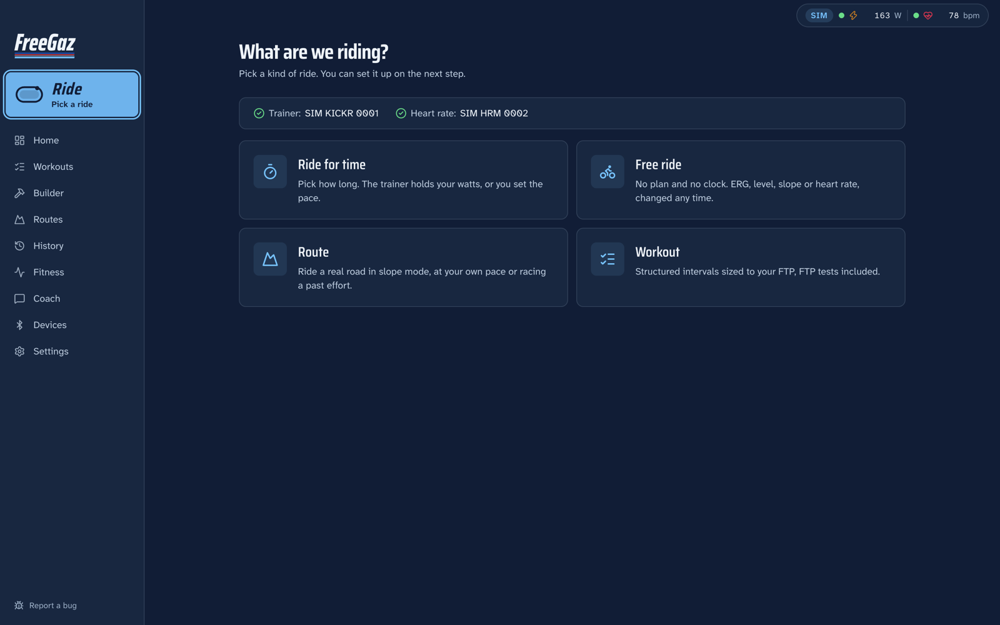

Pick a ride and go
One big button, four choices: ride for time, free ride, a route or a workout. Your trainer and heart-rate status sit on top, so you know before you start.
Ride for time holds your watts from easy to sweet spot for 20 to 90 minutes. No forty-tab dashboard to decode before your warm-up.
